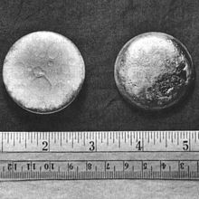
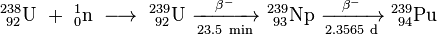
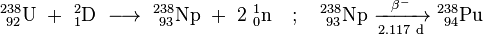

Plutonium
|  | |||||||||||||||||||||||||||||||||||||||||||||||||||||||||||||||||||||||||||||||||||||||||||||||||||||||||||||||||||||||||||||||||||||||||||||||||||||||||||||||||||||||||||||||||||||||||||||||||||||||||||||||||||||||||||||||||||||
| General properties | |||||||||||||||||||||||||||||||||||||||||||||||||||||||||||||||||||||||||||||||||||||||||||||||||||||||||||||||||||||||||||||||||||||||||||||||||||||||||||||||||||||||||||||||||||||||||||||||||||||||||||||||||||||||||||||||||||||
|---|---|---|---|---|---|---|---|---|---|---|---|---|---|---|---|---|---|---|---|---|---|---|---|---|---|---|---|---|---|---|---|---|---|---|---|---|---|---|---|---|---|---|---|---|---|---|---|---|---|---|---|---|---|---|---|---|---|---|---|---|---|---|---|---|---|---|---|---|---|---|---|---|---|---|---|---|---|---|---|---|---|---|---|---|---|---|---|---|---|---|---|---|---|---|---|---|---|---|---|---|---|---|---|---|---|---|---|---|---|---|---|---|---|---|---|---|---|---|---|---|---|---|---|---|---|---|---|---|---|---|---|---|---|---|---|---|---|---|---|---|---|---|---|---|---|---|---|---|---|---|---|---|---|---|---|---|---|---|---|---|---|---|---|---|---|---|---|---|---|---|---|---|---|---|---|---|---|---|---|---|---|---|---|---|---|---|---|---|---|---|---|---|---|---|---|---|---|---|---|---|---|---|---|---|---|---|---|---|---|---|---|---|---|---|---|---|---|---|---|---|---|---|---|---|---|---|---|---|---|
| Name, symbol | plutonium, Pu | ||||||||||||||||||||||||||||||||||||||||||||||||||||||||||||||||||||||||||||||||||||||||||||||||||||||||||||||||||||||||||||||||||||||||||||||||||||||||||||||||||||||||||||||||||||||||||||||||||||||||||||||||||||||||||||||||||||
| Pronunciation | /pluːˈtoʊniəm/ ploo-TOH-nee-əm |
||||||||||||||||||||||||||||||||||||||||||||||||||||||||||||||||||||||||||||||||||||||||||||||||||||||||||||||||||||||||||||||||||||||||||||||||||||||||||||||||||||||||||||||||||||||||||||||||||||||||||||||||||||||||||||||||||||
| Appearance | silvery white, tarnishing to dark gray in air | ||||||||||||||||||||||||||||||||||||||||||||||||||||||||||||||||||||||||||||||||||||||||||||||||||||||||||||||||||||||||||||||||||||||||||||||||||||||||||||||||||||||||||||||||||||||||||||||||||||||||||||||||||||||||||||||||||||
| Plutonium in the periodic table | |||||||||||||||||||||||||||||||||||||||||||||||||||||||||||||||||||||||||||||||||||||||||||||||||||||||||||||||||||||||||||||||||||||||||||||||||||||||||||||||||||||||||||||||||||||||||||||||||||||||||||||||||||||||||||||||||||||
|
|||||||||||||||||||||||||||||||||||||||||||||||||||||||||||||||||||||||||||||||||||||||||||||||||||||||||||||||||||||||||||||||||||||||||||||||||||||||||||||||||||||||||||||||||||||||||||||||||||||||||||||||||||||||||||||||||||||
| Atomic number | 94 | ||||||||||||||||||||||||||||||||||||||||||||||||||||||||||||||||||||||||||||||||||||||||||||||||||||||||||||||||||||||||||||||||||||||||||||||||||||||||||||||||||||||||||||||||||||||||||||||||||||||||||||||||||||||||||||||||||||
| Standard atomic weight | (244) | ||||||||||||||||||||||||||||||||||||||||||||||||||||||||||||||||||||||||||||||||||||||||||||||||||||||||||||||||||||||||||||||||||||||||||||||||||||||||||||||||||||||||||||||||||||||||||||||||||||||||||||||||||||||||||||||||||||
| Element category | actinide | ||||||||||||||||||||||||||||||||||||||||||||||||||||||||||||||||||||||||||||||||||||||||||||||||||||||||||||||||||||||||||||||||||||||||||||||||||||||||||||||||||||||||||||||||||||||||||||||||||||||||||||||||||||||||||||||||||||
| Group, block | group n/a, f-block | ||||||||||||||||||||||||||||||||||||||||||||||||||||||||||||||||||||||||||||||||||||||||||||||||||||||||||||||||||||||||||||||||||||||||||||||||||||||||||||||||||||||||||||||||||||||||||||||||||||||||||||||||||||||||||||||||||||
| Period | period 7 | ||||||||||||||||||||||||||||||||||||||||||||||||||||||||||||||||||||||||||||||||||||||||||||||||||||||||||||||||||||||||||||||||||||||||||||||||||||||||||||||||||||||||||||||||||||||||||||||||||||||||||||||||||||||||||||||||||||
| Electron configuration | [Rn] 5f6 7s2 | ||||||||||||||||||||||||||||||||||||||||||||||||||||||||||||||||||||||||||||||||||||||||||||||||||||||||||||||||||||||||||||||||||||||||||||||||||||||||||||||||||||||||||||||||||||||||||||||||||||||||||||||||||||||||||||||||||||
| per shell | 2, 8, 18, 32, 24, 8, 2 | ||||||||||||||||||||||||||||||||||||||||||||||||||||||||||||||||||||||||||||||||||||||||||||||||||||||||||||||||||||||||||||||||||||||||||||||||||||||||||||||||||||||||||||||||||||||||||||||||||||||||||||||||||||||||||||||||||||
| Physical properties | |||||||||||||||||||||||||||||||||||||||||||||||||||||||||||||||||||||||||||||||||||||||||||||||||||||||||||||||||||||||||||||||||||||||||||||||||||||||||||||||||||||||||||||||||||||||||||||||||||||||||||||||||||||||||||||||||||||
| Phase | solid | ||||||||||||||||||||||||||||||||||||||||||||||||||||||||||||||||||||||||||||||||||||||||||||||||||||||||||||||||||||||||||||||||||||||||||||||||||||||||||||||||||||||||||||||||||||||||||||||||||||||||||||||||||||||||||||||||||||
| Melting point | 912.5 K (639.4 °C, 1182.9 °F) | ||||||||||||||||||||||||||||||||||||||||||||||||||||||||||||||||||||||||||||||||||||||||||||||||||||||||||||||||||||||||||||||||||||||||||||||||||||||||||||||||||||||||||||||||||||||||||||||||||||||||||||||||||||||||||||||||||||
| Boiling point | 3505 K (3228 °C, 5842 °F) | ||||||||||||||||||||||||||||||||||||||||||||||||||||||||||||||||||||||||||||||||||||||||||||||||||||||||||||||||||||||||||||||||||||||||||||||||||||||||||||||||||||||||||||||||||||||||||||||||||||||||||||||||||||||||||||||||||||
| Density near r.t. | 19.816 g·cm−3 | ||||||||||||||||||||||||||||||||||||||||||||||||||||||||||||||||||||||||||||||||||||||||||||||||||||||||||||||||||||||||||||||||||||||||||||||||||||||||||||||||||||||||||||||||||||||||||||||||||||||||||||||||||||||||||||||||||||
| when liquid, at m.p. | 16.63 g·cm−3 | ||||||||||||||||||||||||||||||||||||||||||||||||||||||||||||||||||||||||||||||||||||||||||||||||||||||||||||||||||||||||||||||||||||||||||||||||||||||||||||||||||||||||||||||||||||||||||||||||||||||||||||||||||||||||||||||||||||
| Heat of fusion | 2.82 kJ·mol−1 | ||||||||||||||||||||||||||||||||||||||||||||||||||||||||||||||||||||||||||||||||||||||||||||||||||||||||||||||||||||||||||||||||||||||||||||||||||||||||||||||||||||||||||||||||||||||||||||||||||||||||||||||||||||||||||||||||||||
| Heat of vaporization | 333.5 kJ·mol−1 | ||||||||||||||||||||||||||||||||||||||||||||||||||||||||||||||||||||||||||||||||||||||||||||||||||||||||||||||||||||||||||||||||||||||||||||||||||||||||||||||||||||||||||||||||||||||||||||||||||||||||||||||||||||||||||||||||||||
| Molar heat capacity | 35.5 J·mol−1·K−1 | ||||||||||||||||||||||||||||||||||||||||||||||||||||||||||||||||||||||||||||||||||||||||||||||||||||||||||||||||||||||||||||||||||||||||||||||||||||||||||||||||||||||||||||||||||||||||||||||||||||||||||||||||||||||||||||||||||||
vapor pressure
|
|||||||||||||||||||||||||||||||||||||||||||||||||||||||||||||||||||||||||||||||||||||||||||||||||||||||||||||||||||||||||||||||||||||||||||||||||||||||||||||||||||||||||||||||||||||||||||||||||||||||||||||||||||||||||||||||||||||
| Atomic properties | |||||||||||||||||||||||||||||||||||||||||||||||||||||||||||||||||||||||||||||||||||||||||||||||||||||||||||||||||||||||||||||||||||||||||||||||||||||||||||||||||||||||||||||||||||||||||||||||||||||||||||||||||||||||||||||||||||||
| Oxidation states | 8, 7, 6, 5, 4, 3, 2, 1 (an amphoteric oxide) | ||||||||||||||||||||||||||||||||||||||||||||||||||||||||||||||||||||||||||||||||||||||||||||||||||||||||||||||||||||||||||||||||||||||||||||||||||||||||||||||||||||||||||||||||||||||||||||||||||||||||||||||||||||||||||||||||||||
| Electronegativity | Pauling scale: 1.28 | ||||||||||||||||||||||||||||||||||||||||||||||||||||||||||||||||||||||||||||||||||||||||||||||||||||||||||||||||||||||||||||||||||||||||||||||||||||||||||||||||||||||||||||||||||||||||||||||||||||||||||||||||||||||||||||||||||||
| Ionization energies | 1st: 584.7 kJ·mol−1 | ||||||||||||||||||||||||||||||||||||||||||||||||||||||||||||||||||||||||||||||||||||||||||||||||||||||||||||||||||||||||||||||||||||||||||||||||||||||||||||||||||||||||||||||||||||||||||||||||||||||||||||||||||||||||||||||||||||
| Atomic radius | empirical: 159 pm | ||||||||||||||||||||||||||||||||||||||||||||||||||||||||||||||||||||||||||||||||||||||||||||||||||||||||||||||||||||||||||||||||||||||||||||||||||||||||||||||||||||||||||||||||||||||||||||||||||||||||||||||||||||||||||||||||||||
| Covalent radius | 187±1 pm | ||||||||||||||||||||||||||||||||||||||||||||||||||||||||||||||||||||||||||||||||||||||||||||||||||||||||||||||||||||||||||||||||||||||||||||||||||||||||||||||||||||||||||||||||||||||||||||||||||||||||||||||||||||||||||||||||||||
| Miscellanea | |||||||||||||||||||||||||||||||||||||||||||||||||||||||||||||||||||||||||||||||||||||||||||||||||||||||||||||||||||||||||||||||||||||||||||||||||||||||||||||||||||||||||||||||||||||||||||||||||||||||||||||||||||||||||||||||||||||
| Crystal structure | monoclinic | ||||||||||||||||||||||||||||||||||||||||||||||||||||||||||||||||||||||||||||||||||||||||||||||||||||||||||||||||||||||||||||||||||||||||||||||||||||||||||||||||||||||||||||||||||||||||||||||||||||||||||||||||||||||||||||||||||||
| Speed of sound | 2260 m·s−1 | ||||||||||||||||||||||||||||||||||||||||||||||||||||||||||||||||||||||||||||||||||||||||||||||||||||||||||||||||||||||||||||||||||||||||||||||||||||||||||||||||||||||||||||||||||||||||||||||||||||||||||||||||||||||||||||||||||||
| Thermal expansion | 46.7 µm·m−1·K−1 (at 25 °C) | ||||||||||||||||||||||||||||||||||||||||||||||||||||||||||||||||||||||||||||||||||||||||||||||||||||||||||||||||||||||||||||||||||||||||||||||||||||||||||||||||||||||||||||||||||||||||||||||||||||||||||||||||||||||||||||||||||||
| Thermal conductivity | 6.74 W·m−1·K−1 | ||||||||||||||||||||||||||||||||||||||||||||||||||||||||||||||||||||||||||||||||||||||||||||||||||||||||||||||||||||||||||||||||||||||||||||||||||||||||||||||||||||||||||||||||||||||||||||||||||||||||||||||||||||||||||||||||||||
| Electrical resistivity | 1.460 µΩ·m (at 0 °C) | ||||||||||||||||||||||||||||||||||||||||||||||||||||||||||||||||||||||||||||||||||||||||||||||||||||||||||||||||||||||||||||||||||||||||||||||||||||||||||||||||||||||||||||||||||||||||||||||||||||||||||||||||||||||||||||||||||||
| Magnetic ordering | paramagnetic | ||||||||||||||||||||||||||||||||||||||||||||||||||||||||||||||||||||||||||||||||||||||||||||||||||||||||||||||||||||||||||||||||||||||||||||||||||||||||||||||||||||||||||||||||||||||||||||||||||||||||||||||||||||||||||||||||||||
| Young's modulus | 96 GPa | ||||||||||||||||||||||||||||||||||||||||||||||||||||||||||||||||||||||||||||||||||||||||||||||||||||||||||||||||||||||||||||||||||||||||||||||||||||||||||||||||||||||||||||||||||||||||||||||||||||||||||||||||||||||||||||||||||||
| Shear modulus | 43 GPa | ||||||||||||||||||||||||||||||||||||||||||||||||||||||||||||||||||||||||||||||||||||||||||||||||||||||||||||||||||||||||||||||||||||||||||||||||||||||||||||||||||||||||||||||||||||||||||||||||||||||||||||||||||||||||||||||||||||
| Poisson ratio | 0.21 | ||||||||||||||||||||||||||||||||||||||||||||||||||||||||||||||||||||||||||||||||||||||||||||||||||||||||||||||||||||||||||||||||||||||||||||||||||||||||||||||||||||||||||||||||||||||||||||||||||||||||||||||||||||||||||||||||||||
| CAS Registry Number | 7440-07-5 | ||||||||||||||||||||||||||||||||||||||||||||||||||||||||||||||||||||||||||||||||||||||||||||||||||||||||||||||||||||||||||||||||||||||||||||||||||||||||||||||||||||||||||||||||||||||||||||||||||||||||||||||||||||||||||||||||||||
| History | |||||||||||||||||||||||||||||||||||||||||||||||||||||||||||||||||||||||||||||||||||||||||||||||||||||||||||||||||||||||||||||||||||||||||||||||||||||||||||||||||||||||||||||||||||||||||||||||||||||||||||||||||||||||||||||||||||||
| Naming | after dwarf planet Pluto, itself named after classical god of the underworld Pluto | ||||||||||||||||||||||||||||||||||||||||||||||||||||||||||||||||||||||||||||||||||||||||||||||||||||||||||||||||||||||||||||||||||||||||||||||||||||||||||||||||||||||||||||||||||||||||||||||||||||||||||||||||||||||||||||||||||||
| Discovery | Glenn T. Seaborg, Arthur Wahl, Joseph W. Kennedy, Edwin McMillan (1940–1) | ||||||||||||||||||||||||||||||||||||||||||||||||||||||||||||||||||||||||||||||||||||||||||||||||||||||||||||||||||||||||||||||||||||||||||||||||||||||||||||||||||||||||||||||||||||||||||||||||||||||||||||||||||||||||||||||||||||
| Most stable isotopes | |||||||||||||||||||||||||||||||||||||||||||||||||||||||||||||||||||||||||||||||||||||||||||||||||||||||||||||||||||||||||||||||||||||||||||||||||||||||||||||||||||||||||||||||||||||||||||||||||||||||||||||||||||||||||||||||||||||
|
|||||||||||||||||||||||||||||||||||||||||||||||||||||||||||||||||||||||||||||||||||||||||||||||||||||||||||||||||||||||||||||||||||||||||||||||||||||||||||||||||||||||||||||||||||||||||||||||||||||||||||||||||||||||||||||||||||||
Plutonium is a transuranic radioactive chemical element with the symbol Pu and atomic number 94. It is an actinide metal of silvery-gray appearance that tarnishes when exposed to air, and forms a dull coating when oxidized. The element normally exhibits six allotropes and four oxidation states. It reacts with carbon, halogens, nitrogen, silicon and hydrogen. When exposed to moist air, it forms oxides and hydrides that expand the sample up to 70% in volume, which in turn flake off as a powder that can spontaneously ignite. It is radioactive and can accumulate in bones. These properties make the handling of plutonium dangerous.
A team led by Glenn T. Seaborg and Edwin McMillan at the University of California, Berkeley, first synthesized plutonium in 1940 by bombarding uranium-238 with deuterons. Plutonium is the heaviest primordial element by virtue of its most stable isotope, plutonium-244, whose half-life of about 80 million years is just long enough for the element to be found in trace quantities in nature. Plutonium is mostly a byproduct of nuclear reactions, where some of the neutrons released by the fission process convert uranium-238 nuclei into plutonium.
Both plutonium-239 and plutonium-241 are fissile, meaning that they can sustain a nuclear chain reaction, leading to applications in nuclear weapons and nuclear reactors. Plutonium-240 exhibits a high rate of spontaneous fission, raising the neutron flux of any sample containing it. The presence of plutonium-240 limits a plutonium sample's usability for weapons or its quality as reactor fuel, and the percentage of plutonium-240 determines its grade (weapons-grade, fuel-grade, or reactor-grade). Plutonium-238 has a half-life of 88 years and emits alpha particles. It is a heat source in radioisotope thermoelectric generators, which are used to power some spacecraft. Plutonium isotopes are expensive and inconvenient to separate, so particular isotopes are usually manufactured in specialized reactors.
Producing plutonium in useful quantities for the first time was a major part of the Manhattan Project during World War II, which developed the first atomic bombs. The Fat Man bombs used in the Trinity nuclear test in July 1945, and in the bombing of Nagasaki in August 1945, had plutonium cores. Human radiation experiments studying plutonium were conducted without informed consent, and several criticality accidents, some lethal, occurred after the war. Disposal of plutonium waste from nuclear power plants and dismantled nuclear weapons built during the Cold War is a nuclear-proliferation and environmental concern. Other sources of plutonium in the environment are fallout from numerous above-ground nuclear tests, now banned.
Contents
[hide]Characteristics
Physical properties
Plutonium, like most metals, has a bright silvery appearance at first, much like nickel, but it oxidizes very quickly to a dull gray, although yellow and olive green are also reported.[2][3] At room temperature plutonium is in its α (alpha) form. This, the most common structural form of the element (allotrope), is about as hard and brittle as gray cast iron unless it is alloyed with other metals to make it soft and ductile. Unlike most metals, it is not a good conductor of heat or electricity. It has a low melting point (640 °C) and an unusually high boiling point (3,228 °C).[2]
Alpha decay, the release of a high-energy helium nucleus, is the most common form of radioactive decay for plutonium.[4] A 5 kg mass of 239Pu contains about 12.5×1024 atoms. With a half-life of 24,100 years, about 11.5×1012 of its atoms decay each second by emitting a 5.157 MeV alpha particle. This amounts to 9.68 watts of power. Heat produced by the deceleration of these alpha particles makes it warm to the touch.[5][6]
Resistivity is a measure of how strongly a material opposes the flow of electric current. The resistivity of plutonium at room temperature is very high for a metal, and it gets even higher with lower temperatures, which is unusual for metals.[7] This trend continues down to 100 K, below which resistivity rapidly decreases for fresh samples.[7] Resistivity then begins to increase with time at around 20 K due to radiation damage, with the rate dictated by the isotopic composition of the sample.[7]
Because of self-irradiation, a sample of plutonium fatigues throughout its crystal structure, meaning the ordered arrangement of its atoms becomes disrupted by radiation with time.[8] Self-irradiation can also lead to annealing which counteracts some of the fatigue effects as temperature increases above 100 K.[9]
Unlike most materials, plutonium increases in density when it melts, by 2.5%, but the liquid metal exhibits a linear decrease in density with temperature.[7] Near the melting point, the liquid plutonium has also very high viscosity and surface tension as compared to other metals.[8]
Allotropes
Plutonium normally has six allotropes and forms a seventh (zeta, ζ) at high temperature within a limited pressure range.[10] These allotropes, which are different structural modifications or forms of an element, have very similar internal energies but significantly varying densities and crystal structures. This makes plutonium very sensitive to changes in temperature, pressure, or chemistry, and allows for dramatic volume changes following phase transitions from one allotropic form to another.[8] The densities of the different allotropes vary from 16.00 g/cm3 to 19.86 g/cm3.[11]
The presence of these many allotropes makes machining plutonium very difficult, as it changes state very readily. For example, the α form exists at room temperature in unalloyed plutonium. It has machining characteristics similar to cast iron but changes to the plastic and malleable β (beta) form at slightly higher temperatures.[12] The reasons for the complicated phase diagram are not entirely understood. The α form has a low-symmetry monoclinic structure, hence its brittleness, strength, compressibility, and poor thermal conductivity.[10]
Plutonium in the δ (delta) form normally exists in the 310 °C to 452 °C range but is stable at room temperature when alloyed with a small percentage of gallium, aluminium, or cerium, enhancing workability and allowing it to be welded.[12] The δ form has more typical metallic character, and is roughly as strong and malleable as aluminium.[10] In fission weapons, the explosive shock waves used to compress a plutonium core will also cause a transition from the usual δ phase plutonium to the denser α form, significantly helping to achieve supercriticality.[13] The ε phase, the highest temperature solid allotrope, exhibits anomalously high atomic self-diffusion compared to other elements.[8]
Nuclear fission
Plutonium is a radioactive actinide metal whose isotope, plutonium-239, is one of the three primary fissile isotopes (uranium-233 and uranium-235 are the other two); plutonium-241 is also highly fissile. To be considered fissile, an isotope's atomic nucleus must be able to break apart or fission when struck by a slow moving neutron and to release enough additional neutrons to sustain the nuclear chain reaction by splitting further nuclei.[14]
Pure plutonium-239 may have a multiplication factor (keff) larger than one, which means that if the metal is present in sufficient quantity and with an appropriate geometry (e.g., a sphere of sufficient size), it can form a critical mass.[15] During fission, a fraction of the binding energy, which holds a nucleus together, is released as a large amount of electromagnetic and kinetic energy (much of the latter being quickly converted to thermal energy). Fission of a kilogram of plutonium-239 can produce an explosion equivalent to 21,000 tons of TNT (88,000 GJ). It is this energy that makes plutonium-239 useful in nuclear weapons and reactors.[5]
The presence of the isotope plutonium-240 in a sample limits its nuclear bomb potential, as plutonium-240 has a relatively high spontaneous fission rate (~440 fissions per second per gram—over 1,000 neutrons per second per gram),[16] raising the background neutron levels and thus increasing the risk of predetonation.[17] Plutonium is identified as either weapons-grade, fuel-grade, or reactor-grade based on the percentage of plutonium-240 that it contains. Weapons-grade plutonium contains less than 7% plutonium-240. Fuel-grade plutonium contains from 7% to less than 19%, and power reactor-grade contains 19% or more plutonium-240. Supergrade plutonium, with less than 4% of plutonium-240, is used in U.S. Navy weapons stored in proximity to ship and submarine crews, due to its lower radioactivity.[18] The isotope plutonium-238 is not fissile but can undergo nuclear fission easily with fast neutrons as well as alpha decay.[5]
Isotopes and synthesis
Twenty radioactive isotopes of plutonium have been characterized. The longest-lived are plutonium-244, with a half-life of 80.8 million years, plutonium-242, with a half-life of 373,300 years, and plutonium-239, with a half-life of 24,110 years. All of the remaining radioactive isotopes have half-lives that are less than 7,000 years. This element also has eight metastable states, though all have half-lives less than one second.[4]
The isotopes of plutonium range in mass number from 228 to 247. The primary decay modes of isotopes with mass numbers lower than the most stable isotope, plutonium-244, are spontaneous fission and alpha emission, mostly forming uranium (92 protons) and neptunium (93 protons) isotopes as decay products (neglecting the wide range of daughter nuclei created by fission processes). The primary decay mode for isotopes with mass numbers higher than plutonium-244 is beta emission, mostly forming americium (95 protons) isotopes as decay products. Plutonium-241 is the parent isotope of the neptunium decay series, decaying to americium-241 via beta or electron emission.[4][19]
Plutonium-238 and 239 are the most widely synthesized isotopes.[5] Plutonium-239 is synthesized via the following reaction using uranium (U) and neutrons (n) via beta decay (β−) with neptunium (Np) as an intermediate:[20]
- 
Neutrons from the fission of uranium-235 are captured by uranium-238 nuclei to form uranium-239; a beta decay converts a neutron into a proton to form Np-239 (half-life 2.36 days) and another beta decay forms plutonium-239.[21] Egon Bretscher working on the British Tube Alloys project predicted this reaction theoretically in 1940.[22]
Plutonium-238 is synthesized by bombarding uranium-238 with deuterons (D, the nuclei of heavy hydrogen) in the following reaction:[23]
- 
In this process, a deuteron hitting uranium-238 produces two neutrons and neptunium-238, which spontaneously decays by emitting negative beta particles to form plutonium-238.[24]
Decay heat and fission properties
Plutonium isotopes undergo radioactive decay, which produces decay heat. Different isotopes produce different amounts of heat per mass. The decay heat is usually listed as watt/kilogram, or milliwatt/gram. In larger pieces of plutonium (e.g. a weapon pit) and inadequate heat removal the resulting self-heating may be significant. All isotopes produce weak gamma on decay.
| Isotope | Decay mode | Half-life (years) | Decay heat (W/kg) | Spontaneous fission neutrons (1/(g·s)) | Comment |
|---|---|---|---|---|---|
| 238Pu | alpha to 234U | 87.74 | 560 | 2600 | Very high decay heat. Even in small amounts can cause significant self-heating. Used on its own in radioisotope thermoelectric generators. |
| 239Pu | alpha to 235U | 24100 | 1.9 | 0.022 | The principal fissile isotope in use. |
| 240Pu | alpha to 236U, spontaneous fission | 6560 | 6.8 | 910 | The principal impurity in samples of the 239Pu isotope. The plutonium grade is usually listed as percentage of 240Pu. High spontaneous fission hinders use in nuclear weapons. |
| 241Pu | beta-minus, to 241Am | 14.4 | 4.2 | 0.049 | Decays to americium-241; its buildup presents a radiation hazard in older samples. |
| 242Pu | alpha to 238U | 376000 | 0.1 | 1700 |
Compounds and chemistry
At room temperature, pure plutonium is silvery in color but gains a tarnish when oxidized.[26] The element displays four common ionic oxidation states in aqueous solution and one rare one:[11]
- Pu(III), as Pu3+ (blue lavender)
- Pu(IV), as Pu4+ (yellow brown)
- Pu(V), as PuO+
2 (light pink)[note 1] - Pu(VI), as PuO2+
2 (pink orange) - Pu(VII), as PuO3−
5 (green)—the heptavalent ion is rare.
The color shown by plutonium solutions depends on both the oxidation state and the nature of the acid anion.[28] It is the acid anion that influences the degree of complexing—how atoms connect to a central atom—of the plutonium species.
Metallic plutonium is produced by reacting plutonium tetrafluoride with barium, calcium or lithium at 1200 °C.[29] It is attacked by acids, oxygen, and steam but not by alkalis and dissolves easily in concentrated hydrochloric, hydroiodic and perchloric acids.[30] Molten metal must be kept in a vacuum or an inert atmosphere to avoid reaction with air.[12] At 135 °C the metal will ignite in air and will explode if placed in carbon tetrachloride.[31]
Plutonium is a reactive metal. In moist air or moist argon, the metal oxidizes rapidly, producing a mixture of oxides and hydrides.[2] If the metal is exposed long enough to a limited amount of water vapor, a powdery surface coating of PuO2 is formed.[2] Also formed is plutonium hydride but an excess of water vapor forms only PuO2.[30]
Plutonium shows enormous, and reversible, reaction rates with pure hydrogen, forming plutonium hydride.[8] It also reacts readily with oxygen, forming PuO and PuO2 as well as intermediate oxides; plutonium oxide fills 40% more volume than plutonium metal. The metal reacts with the halogens, giving rise to compounds with the general formula PuX3 where X can be F, Cl, Br or I and PuF4 is also seen. The following oxyhalides are observed: PuOCl, PuOBr and PuOI. It will react with carbon to form PuC, nitrogen to form PuN and silicon to form PuSi2.[11][31]
Powders of plutonium, its hydrides and certain oxides like Pu2O3 are pyrophoric, meaning they can ignite spontaneously at ambient temperature and are therefore handled in an inert, dry atmosphere of nitrogen or argon. Bulk plutonium ignites only when heated above 400 °C. Pu2O3 spontaneously heats up and transforms into PuO2, which is stable in dry air, but reacts with water vapor when heated.[32]
Crucibles used to contain plutonium need to be able to withstand its strongly reducing properties. Refractory metals such as tantalum and tungsten along with the more stable oxides, borides, carbides, nitrides and silicides can tolerate this. Melting in an electric arc furnace can be used to produce small ingots of the metal without the need for a crucible.[12]
Cerium is used as a chemical simulant of plutonium for development of containment, extraction, and other technologies.[33]
Electronic structure
Plutonium is an element in which the 5f electrons are the transition border between delocalized and localized; it is therefore considered one of the most complex elements.[34] The anomalous behavior of plutonium is caused by its electronic structure. The energy difference between the 6d and 5f subshells is very low. The size of the 5f shell is just enough to allow the electrons to form bonds within the lattice, on the very boundary between localized and bonding behavior. The proximity of energy levels leads to multiple low-energy electron configurations with near equal energy levels. This leads to competing 5fn7s2 and 5fn−16d17s2 configurations, which causes the complexity of its chemical behavior. The highly directional nature of 5f orbitals is responsible for directional covalent bonds in molecules and complexes of plutonium.[8]
Alloys
Plutonium can form alloys and intermediate compounds with most other metals. Exceptions include lithium, sodium, potassium, rubidium and caesium of the alkali metals; and magnesium, calcium, strontium, and barium of the alkaline earth metals; and europium and ytterbium of the rare earth metals.[30] Partial exceptions include the refractory metals chromium, molybdenum, niobium, tantalum, and tungsten, which are soluble in liquid plutonium, but insoluble or only slightly soluble in solid plutonium.[30] Gallium, aluminium, americium, scandium and cerium can stabilize the δ phase of plutonium for room temperature. Silicon, indium, zinc and zirconium allow formation of metastable δ state when rapidly cooled. High amounts of hafnium, holmium and thallium also allows some retention of the δ phase at room temperature. Neptunium is the only element that can stabilize the α phase at higher temperatures.[8]
Plutonium alloys can be produced by adding a metal to molten plutonium. If the alloying metal is sufficiently reductive, plutonium can be added in the form of oxides or halides. The δ phase plutonium–gallium and plutonium–aluminium alloys are produced by adding plutonium(III) fluoride to molten gallium or aluminium, which has the advantage of avoiding dealing directly with the highly reactive plutonium metal.[35]
- Plutonium–gallium is used for stabilizing the δ phase of plutonium, avoiding the α-phase and α–δ related issues. Its main use is in pits of implosion nuclear weapons.[36]
- Plutonium–aluminium is an alternative to the Pu–Ga alloy. It was the original element considered for δ phase stabilization, but its tendency to react with the alpha particles and release neutrons reduces its usability for nuclear weapon pits. Plutonium–aluminium alloy can be also used as a component of nuclear fuel.[37]
- Plutonium–gallium–cobalt alloy (PuCoGa5) is an unconventional superconductor, showing superconductivity below 18.5 K, an order of magnitude higher than the highest between heavy fermion systems, and has large critical current.[34][38]
- Plutonium–zirconium alloy can be used as nuclear fuel.[39]
- Plutonium–cerium and plutonium–cerium–cobalt alloys are used as nuclear fuels.[40]
- Plutonium–uranium, with about 15–30 mol.% plutonium, can be used as a nuclear fuel for fast breeder reactors. Its pyrophoric nature and high susceptibility to corrosion to the point of self-igniting or disintegrating after exposure to air require alloying with other components. Addition of aluminium, carbon or copper does not improve disintegration rates markedly, zirconium and iron alloys have better corrosion resistance but they disintegrate in several months in air as well. Addition of titanium and/or zirconium significantly increases the melting point of the alloy.[41]
- Plutonium–uranium–titanium and plutonium–uranium–zirconium were investigated for use as nuclear fuels. The addition of the third element increases corrosion resistance, reduces flammability, and improves ductility, fabricability, strength, and thermal expansion. Plutonium–uranium–molybdenum has the best corrosion resistance, forming a protective film of oxides, but titanium and zirconium are preferred for physics reasons.[41]
- Thorium–uranium–plutonium was investigated as a nuclear fuel for fast breeder reactors.[41]
Occurrence
Trace amounts of at least three plutonium isotopes (plutonium-238, 239, and 244) can be found in nature. Small traces of plutonium-239, a few parts per trillion, and its decay products are naturally found in some concentrated ores of uranium,[42] such as the natural nuclear fission reactor in Oklo, Gabon.[43] The ratio of plutonium-239 to uranium at the Cigar Lake Mine uranium deposit ranges from 2.4×10−12 to 44×10−12.[44] Even smaller amounts of primordial plutonium-244 occur naturally due to its relatively long half-life of about 80 million years.[45] These trace amounts of 239Pu originate in the following fashion: On rare occasions, 238U undergoes spontaneous fission, and in the process, the nucleus emits one or two free neutrons with some kinetic energy. When one of these neutrons strikes the nucleus of another 238U atom, it is absorbed by the atom, which becomes 239U. With a relatively short half-life, 239U decays to 239Np, which decays into 239Pu.[46][47]
Because the relatively long-lived isotope plutonium-240 occurs in the decay chain of plutonium-244 it should also be present, albeit 10,000 times rarer still. Finally, exceedingly small amounts of plutonium-238, attributed to the extremely rare double beta decay of uranium-238, have been found in natural uranium samples.[48]
Minute traces of plutonium are usually found in the human body due to the 550 atmospheric and underwater nuclear tests that have been carried out, and to a small number of major nuclear accidents. Most atmospheric and underwater nuclear testing was stopped by the Limited Test Ban Treaty in 1963, which was signed and ratified by the United States, the United Kingdom, the Soviet Union, and other nations. Continued atmospheric nuclear weapons testing since 1963 by non-treaty nations included those by China (atomic bomb test above the Gobi Desert in 1964, hydrogen bomb test in 1967, and follow-on tests), and France (tests as recently as the 1990s). Because it is deliberately manufactured for nuclear weapons and nuclear reactors, plutonium-239 is the most abundant isotope of plutonium by far.[31]
History
Discovery
Enrico Fermi and a team of scientists at the University of Rome reported that they had discovered element 94 in 1934.[49] Fermi called the element hesperium and mentioned it in his Nobel Lecture in 1938.[50] The sample was actually a mixture of barium, krypton, and other elements, but this was not known at the time.[51] Nuclear fission was discovered in Germany in 1939 by Fritz Strassmann and Otto Hahn. The mechanism of fission was then theoretically explained by Lise Meitner and Otto Frisch.[52]
Plutonium (specifically, plutonium-238) was first produced and isolated on December 14, 1940, and chemically identified on February 23, 1941, by Glenn T. Seaborg, Edwin McMillan, Joseph W. Kennedy, and Arthur Wahl by deuteron bombardment of uranium in the 60-inch (150 cm) cyclotron at the Berkeley Radiation Laboratory at the University of California, Berkeley.[53][54] In the 1940 experiment, neptunium-238 was created directly by the bombardment but decayed by beta emission with a half-life of a little over two days, which indicated the formation of element 94.[31]
A paper documenting the discovery was prepared by the team and sent to the journal Physical Review in March 1941,[31] but publication was delayed until a year after the end of World War II due to security concerns.[55] At the Cavendish Laboratory in Cambridge, Egon Bretscher and Norman Feather realized that a slow neutron reactor fuelled with uranium would theoretically produce substantial amounts of plutonium-239 as a by-product. They calculated that element 94 would be fissile, and had the added advantage of being chemically different from uranium, and could easily be separated from it.[22]
McMillan had recently named the first transuranic element neptunium after the planet Neptune, and suggested that element 94, being the next element in the series, be named for what was then considered the next planet, Pluto.[5][note 2] Nicholas Kemmer of the Cambridge team independently proposed the same name, based on the same reasoning as the Berkeley team.[22] Seaborg originally considered the name "plutium", but later thought that it did not sound as good as "plutonium."[57] He chose the letters "Pu" as a joke, which passed without notice into the periodic table.[note 3] Alternative names considered by Seaborg and others were "ultimium" or "extremium" because of the erroneous belief that they had found the last possible element on the periodic table.[59]
Early research
The basic chemistry of plutonium was found to resemble uranium after a few months of initial study.[31] Early research was continued at the secret Metallurgical Laboratory of the University of Chicago. On August 20, 1942, a trace quantity of this element was isolated and measured for the first time. About 50 micrograms of plutonium-239 combined with uranium and fission products was produced and only about 1 microgram was isolated.[42][60] This procedure enabled chemists to determine the new element's atomic weight.[61][note 4]
In November 1943 some plutonium trifluoride was reduced to create the first sample of plutonium metal: a few micrograms of metallic beads.[42] Enough plutonium was produced to make it the first synthetically made element to be visible with the unaided eye.[62]
The nuclear properties of plutonium-239 were also studied; researchers found that when it is hit by a neutron it breaks apart (fissions) by releasing more neutrons and energy. These neutrons can hit other atoms of plutonium-239 and so on in an exponentially fast chain reaction. This can result in an explosion large enough to destroy a city if enough of the isotope is concentrated to form a critical mass.[31]
Production during the Manhattan Project
During World War II the U.S. government established the Manhattan Project, which was tasked with developing an atomic bomb. The three primary research and production sites of the project were the plutonium production facility at what is now the Hanford Site, the uranium enrichment facilities at Oak Ridge, Tennessee, and the weapons research and design laboratory, now known as Los Alamos National Laboratory.[63]
The first production reactor that made plutonium-239 was the X-10 Graphite Reactor. It went online in 1943 and was built at a facility in Oak Ridge that later became the Oak Ridge National Laboratory.[31][note 5]
On April 5, 1944, Emilio Segrè at Los Alamos received the first sample of reactor-produced plutonium from Oak Ridge.[65] Within ten days, he discovered that reactor-bred plutonium had a higher concentration of the isotope plutonium-240 than cyclotron-produced plutonium. Plutonium-240 has a high spontaneous fission rate, raising the overall background neutron level of the plutonium sample.[66] The original gun-type plutonium weapon, code-named "Thin Man", had to be abandoned as a result—the increased number of spontaneous neutrons meant that nuclear pre-detonation (fizzle) was likely.[67]
The entire plutonium weapon design effort at Los Alamos was soon changed to the more complicated implosion device, code-named "Fat Man". With an implosion weapon, plutonium is compressed to a high density with explosive lenses—a technically more daunting task than the simple gun-type design, but necessary to use plutonium for weapons purposes. Enriched uranium, by contrast, can be used with either method.[67]
Construction of the Hanford B Reactor, the first industrial-sized nuclear reactor for the purposes of material production, was completed in March 1945. B Reactor produced the fissile material for the plutonium weapons used during World War II.[note 6] B, D and F were the initial reactors built at Hanford, and six additional plutonium-producing reactors were built later at the site.[70]
According to Kate Brown, the plutonium production plants at Hanford and Mayak in Russia, over a period of four decades, "both released more than 200 million curies of radioactive isotopes into the surrounding environment — twice the amount expelled in the Chernobyl disaster in each instance".[71] Most of this radioactive contamination over the years were part of normal operations, but unforeseen accidents did occur and plant management kept this secret, as the pollution continued unabated. Even today, as pollution threats to health and the environment persist, the government keeps knowledge about the associated risks from the public.[71]
In 2004, a safe was discovered during excavations of a burial trench at the Hanford nuclear site. Inside the safe were various items, including a large glass bottle containing a whitish slurry which was subsequently identified as the oldest sample of weapons-grade plutonium known to exist. Isotope analysis by Pacific Northwest National Laboratory indicated that the plutonium in the bottle was manufactured in the X-10 Graphite Reactor at Oak Ridge during 1944.[72][73][74]
Trinity and Fat Man atomic bombs
The first atomic bomb test, codenamed "Trinity" and detonated on July 16, 1945, near Alamogordo, New Mexico, used plutonium as its fissile material.[42] The implosion design of "the gadget", as the Trinity device was code-named, used conventional explosive lenses to compress a sphere of plutonium into a supercritical mass, which was simultaneously showered with neutrons from the "Urchin", an initiator made of polonium and beryllium (neutron source: (α, n) reaction).[31] Together, these ensured a runaway chain reaction and explosion. The overall weapon weighed over 4 tonnes, although it used just 6.2 kg of plutonium in its core.[75] About 20% of the plutonium used in the Trinity weapon underwent fission, resulting in an explosion with an energy equivalent to approximately 20,000 tons of TNT.[76][note 7]
An identical design was used in the "Fat Man" atomic bomb dropped on Nagasaki, Japan, on August 9, 1945, killing roughly 39,000–80,000 people,[78] including thousands of Japanese civilian munitions workers and at least 150 Japanese soldiers, and destroying 68%–80% of industrial production at Nagasaki.[79][80] Only after the announcement of the first atomic bombs was the existence and name of plutonium made known to the public by the Manhattan Project's Smyth Report.[81]
Cold War use and waste
Large stockpiles of weapons-grade plutonium were built up by both the Soviet Union and the United States during the Cold War. The U.S. reactors at Hanford and the Savannah River Site in South Carolina produced 103 tonnes,[82] and an estimated 170 tonnes of military-grade plutonium was produced in the USSR.[83][note 8] Each year about 20 tonnes of the element is still produced as a by-product of the nuclear power industry.[11] As much as 1000 tonnes of plutonium may be in storage with more than 200 tonnes of that either inside or extracted from nuclear weapons.[31] SIPRI estimated the world plutonium stockpile in 2007 as about 500 tonnes, divided equally between weapon and civilian stocks.[85]
Since the end of the Cold War these stockpiles have become a focus of nuclear proliferation concerns. In the U.S., some plutonium extracted from dismantled nuclear weapons is melted to form glass logs of plutonium oxide that weigh two tonnes.[31] The glass is made of borosilicates mixed with cadmium and gadolinium.[note 9] These logs are planned to be encased in stainless steel and stored as much as 4 km (2 mi) underground in bore holes that will be back-filled with concrete.[31] The U.S. planned to store plutonium in this way at the Yucca Mountain nuclear waste repository, which is about 100 miles (160 km) north-east of Las Vegas, Nevada.[86] Local and state opposition to this plan delayed efforts to store nuclear waste at Yucca Mountain. In March 2010, the Department of Energy withdrew its license application for the Yucca Mountain repository "with prejudice" and eliminated funding for the Office of Civilian Radioactive Waste Management, which had managed the Yucca Mountain site for 25 years, canceling the program.[87]
Medical experimentation
During and after the end of World War II, scientists working on the Manhattan Project and other nuclear weapons research projects conducted studies of the effects of plutonium on laboratory animals and human subjects.[88] Animal studies found that a few milligrams of plutonium per kilogram of tissue is a lethal dose.[89]
In the case of human subjects, this involved injecting solutions containing (typically) five micrograms of plutonium into hospital patients thought to be either terminally ill, or to have a life expectancy of less than ten years either due to age or chronic disease condition.[88] This was reduced to one microgram in July 1945 after animal studies found that the way plutonium distributed itself in bones was more dangerous than radium.[89] Most of the subjects, Eileen Welsome says, were poor, powerless, and sick.[90]
From 1945 to 1947, eighteen human test subjects were injected with plutonium without informed consent. The tests were used to create diagnostic tools to determine the uptake of plutonium in the body in order to develop safety standards for working with plutonium.[88] Other experiments directed by the United States Atomic Energy Commission and the Manhattan Project continued into the 1970s. The Plutonium Files chronicles the lives of the subjects of the secret program by naming each person involved and discussing the ethical and medical research conducted in secret by the scientists and doctors. The episode is now considered to be a serious breach of medical ethics and of the Hippocratic Oath.[91]
The government covered up most of these radiation mishaps until 1993, when President Bill Clinton ordered a change of policy and federal agencies then made available relevant records. The resulting investigation was undertaken by the president’s Advisory Committee on Human Radiation Experiments, and it uncovered much of the material about plutonium research on humans. The committee issued a controversial 1995 report which said that "wrongs were committed" but it did not condemn those who perpetrated them.[90]
Applications
Explosives
The isotope plutonium-239 is a key fissile component in nuclear weapons, due to its ease of fission and availability. Encasing the bomb's plutonium pit in a tamper (an optional layer of dense material) decreases the amount of plutonium needed to reach critical mass by reflecting escaping neutrons back into the plutonium core. This reduces the amount of plutonium needed to reach criticality from 16 kg to 10 kg, which is a sphere with a diameter of about 10 centimeters (4 in).[92] This critical mass is about a third of that for uranium-235.[5]
The Fat Man plutonium bombs used explosive compression of plutonium to obtain significantly higher densities than normal, combined with a central neutron source to begin the reaction and increase efficiency. Thus only 6.2 kg of plutonium was needed for an explosive yield equivalent to 20 kilotons of TNT.[76][93] Hypothetically, as little as 4 kg of plutonium—and maybe even less—could be used to make a single atomic bomb using very sophisticated assembly designs.[93]
Mixed oxide fuel
Spent nuclear fuel from normal light water reactors contains plutonium, but it is a mixture of plutonium-242, 240, 239 and 238. The mixture is not sufficiently enriched for efficient nuclear weapons, but can be used once as MOX fuel.[94] Accidental neutron capture causes the amount of plutonium-242 and 240 to grow each time the plutonium is irradiated in a reactor with low-speed "thermal" neutrons, so that after the second cycle, the plutonium can only be consumed by fast neutron reactors. If fast neutron reactors are not available (the normal case), excess plutonium is usually discarded, and forms the longest-lived component of nuclear waste. The desire to consume this plutonium and other transuranic fuels and reduce the radiotoxicity of the waste is the usual reason nuclear engineers give to make fast neutron reactors.[95]
The most common chemical process, PUREX (Plutonium–URanium EXtraction) reprocesses spent nuclear fuel to extract plutonium and uranium which can be used to form a mixed oxide (MOX) fuel for reuse in nuclear reactors. Weapons-grade plutonium can be added to the fuel mix. MOX fuel is used in light water reactors and consists of 60 kg of plutonium per tonne of fuel; after four years, three-quarters of the plutonium is burned (turned into other elements).[31] Breeder reactors are specifically designed to create more fissionable material than they consume.[96]
MOX fuel has been in use since the 1980s, and is widely used in Europe.[94] In September 2000, the United States and the Russian Federation signed a Plutonium Management and Disposition Agreement by which each agreed to dispose of 34 tonnes of weapons-grade plutonium.[97] The U.S. Department of Energy plans to dispose of 34 tonnes of weapons-grade plutonium in the United States before the end of 2019 by converting the plutonium to a MOX fuel to be used in commercial nuclear power reactors.[97]
MOX fuel improves total burnup. A fuel rod is reprocessed after three years of use to remove waste products, which by then account for 3% of the total weight of the rods.[31] Any uranium or plutonium isotopes produced during those three years are left and the rod goes back into production.[note 10] The presence of up to 1% gallium per mass in weapons-grade plutonium alloy has the potential to interfere with long-term operation of a light water reactor.[98]
Plutonium recovered from spent reactor fuel poses a less significant proliferation hazard, because of excessive contamination with non-fissile plutonium-240 and plutonium-242. Separation of the isotopes is not feasible. A dedicated reactor operating on very low burnup (hence minimal exposure of newly formed plutonium-239 to additional neutrons which causes it to be transformed to heavier isotopes of plutonium) is generally required to produce material suitable for use in efficient nuclear weapons. While "weapons-grade" plutonium is defined to contain at least 92% plutonium-239 (of the total plutonium), the United States have managed to detonate an under-20Kt device using plutonium believed to contain only about 85% plutonium-239, so called '"fuel-grade" plutonium.[99] The "reactor-grade" plutonium produced by a regular LWR burnup cycle typically contains less than 60% Pu-239, with up to 30% parasitic Pu-240/Pu-242, and 10–15% fissile Pu-241.[99] It is unknown if a device using plutonium obtained from reprocessed civil nuclear waste can be detonated, however such a device could hypothetically fizzle and spread radioactive materials over a large urban area. The IAEA conservatively classifies plutonium of all isotopic vectors as "direct-use" material, that is, "nuclear material that can be used for the manufacture of nuclear explosives components without transmutation or further enrichment".[99]
Power and heat source
The isotope plutonium-238 has a half-life of 87.74 years.[100] It emits a large amount of thermal energy with low levels of both gamma rays/particles and spontaneous neutron rays/particles.[101] Being an alpha emitter, it combines high energy radiation with low penetration and thereby requires minimal shielding. A sheet of paper can be used to shield against the alpha particles emitted by plutonium-238. One kilogram of the isotope can generate about 570 watts of heat.[5][101]
These characteristics make it well-suited for electrical power generation for devices that must function without direct maintenance for timescales approximating a human lifetime. It is therefore used in radioisotope thermoelectric generators and radioisotope heater units such as those in the Cassini,[102] Voyager, Galileo and New Horizons space probes, and the Curiosity Mars rover.[103]
The twin Voyager spacecraft were launched in 1977, each containing a 500 watt plutonium power source. Over 30 years later, each source is still producing about 300 watts which allows limited operation of each spacecraft.[104] An earlier version of the same technology powered five Apollo Lunar Surface Experiment Packages, starting with Apollo 12 in 1969.[31]
Plutonium-238 has also been used successfully to power artificial heart pacemakers, to reduce the risk of repeated surgery.[105][106] It has been largely replaced by lithium-based primary cells, but as of 2003[update] there were somewhere between 50 and 100 plutonium-powered pacemakers still implanted and functioning in living patients.[107] Plutonium-238 was studied as a way to provide supplemental heat to scuba diving.[108] Plutonium-238 mixed with beryllium is used to generate neutrons for research purposes.[31]
Precautions
Toxicity
There are two aspects to the harmful effects of plutonium: the radioactivity and the heavy metal poison effects. Isotopes and compounds of plutonium are radioactive and accumulate in bone marrow. Contamination by plutonium oxide has resulted from nuclear disasters and radioactive incidents, including military nuclear accidents where nuclear weapons have burned.[109] Studies of the effects of these smaller releases, as well as of the widespread radiation poisoning sickness and death following the atomic bombings of Hiroshima and Nagasaki, have provided considerable information regarding the dangers, symptoms and prognosis of radiation poisoning, which in the case of the Japanese Hibakusha/survivors was largely unrelated to direct plutonium exposure.[110]
During the decay of plutonium, three types of radiation are released—alpha, beta, and gamma. Alpha, beta, and gamma radiation are all forms of ionizing radiation. Either acute or longer-term exposure carries a danger of serious health outcomes including radiation sickness, genetic damage, cancer, and death. The danger increases with the amount of exposure.[31] Alpha radiation can travel only a short distance and cannot travel through the outer, dead layer of human skin. Beta radiation can penetrate human skin, but cannot go all the way through the body. Gamma radiation can go all the way through the body.[111] Even though alpha radiation cannot penetrate the skin, ingested or inhaled plutonium does irradiate internal organs.[31] The skeleton, where plutonium accumulates, and the liver, where it collects and becomes concentrated, are at risk.[30] Plutonium is not absorbed into the body efficiently when ingested; only 0.04% of plutonium oxide is absorbed after ingestion.[31] Plutonium absorbed by the body is excreted very slowly, with a biological half-life of 200 years.[112] Plutonium passes only slowly through cell membranes and intestinal boundaries, so absorption by ingestion and incorporation into bone structure proceeds very slowly.[113][114]
Plutonium is more dangerous when inhaled than when ingested. The risk of lung cancer increases once the total radiation dose equivalent of inhaled plutonium exceeds 400 mSv.[115] The U.S. Department of Energy estimates that the lifetime cancer risk from inhaling 5,000 plutonium particles, each about 3 µm wide, to be 1% over the background U.S. average.[116] Ingestion or inhalation of large amounts may cause acute radiation poisoning and death; however no human is known to have died because of inhaling or ingesting plutonium, and many people have measurable amounts of plutonium in their bodies.[99]
The "hot particle" theory in which a particle of plutonium dust radiates a localized spot of lung tissue is not supported by mainstream research—such particles are more mobile than originally thought and toxicity is not measurably increased due to particulate form.[113] When inhaled, plutonium can pass into the bloodstream. Once in the bloodstream, plutonium moves throughout the body and into the bones, liver, or other body organs. Plutonium that reaches body organs generally stays in the body for decades and continues to expose the surrounding tissue to radiation and thus may cause cancer.[117]
A commonly cited quote by Ralph Nader states that a pound of plutonium dust spread into the atmosphere would be enough to kill 8 billion people.[118] However, calculations show that one pound of plutonium could kill no more than 2 million people by inhalation. This makes the toxicity of plutonium roughly equivalent with that of nerve gas.[119] Nader's views were challenged in 1976 by Bernard Cohen, as described in the book Nuclear Power, Both Sides: The Best Arguments for and Against the Most Controversial Technology. Cohen's own estimate is that a dose of 200 micrograms would likely be necessary to cause cancer.[120]
Several populations of people who have been exposed to plutonium dust (e.g. people living down-wind of Nevada test sites, Nagasaki survivors, nuclear facility workers, and "terminally ill" patients injected with Pu in 1945–46 to study Pu metabolism) have been carefully followed and analyzed. These studies generally do not show especially high plutonium toxicity or plutonium-induced cancer results, such as Albert Stevens who survived into old age after being injected with plutonium.[113] "There were about 25 workers from Los Alamos National Laboratory who inhaled a considerable amount of plutonium dust during 1940s; according to the hot-particle theory, each of them has a 99.5% chance of being dead from lung cancer by now, but there has not been a single lung cancer among them."[119][121]
Plutonium has a metallic taste.[122]
Criticality potential
Toxicity issues aside, care must be taken to avoid the accumulation of amounts of plutonium which approach critical mass, particularly because plutonium's critical mass is only a third of that of uranium-235.[5] A critical mass of plutonium emits lethal amounts of neutrons and gamma rays.[123] Plutonium in solution is more likely to form a critical mass than the solid form due to moderation by the hydrogen in water.[11]
Criticality accidents have occurred in the past, some of them with lethal consequences. Careless handling of tungsten carbide bricks around a 6.2 kg plutonium sphere resulted in a fatal dose of radiation at Los Alamos on August 21, 1945, when scientist Harry K. Daghlian, Jr. received a dose estimated to be 5.1 sievert (510 rems) and died 25 days later.[124][125] Nine months later, another Los Alamos scientist, Louis Slotin, died from a similar accident involving a beryllium reflector and the same plutonium core (the so-called "demon core") that had previously claimed the life of Daghlian.[126]
In December 1958, during a process of purifying plutonium at Los Alamos, a critical mass was formed in a mixing vessel, which resulted in the death of a chemical operator named Cecil Kelley. Other nuclear accidents have occurred in the Soviet Union, Japan, the United States, and many other countries.[127]
Flammability
Metallic plutonium is a fire hazard, especially if the material is finely divided. In a moist environment, plutonium forms hydrides on its surface, which are pyrophoric and may ignite in air at room temperature. Plutonium expands up to 70% in volume as it oxidizes and thus may break its container.[32] The radioactivity of the burning material is an additional hazard. Magnesium oxide sand is probably the most effective material for extinguishing a plutonium fire. It cools the burning material, acting as a heat sink, and also blocks off oxygen. Special precautions are necessary to store or handle plutonium in any form; generally a dry inert gas atmosphere is required.[32][note 11]
Transportation
Land and sea
The usual transportation of plutonium is through the more stable plutonium oxide in a sealed package. A typical transport consists of one truck carrying one protected shipping container, holding a number of packages with a total weight varying from 80 to 200 kg of plutonium oxide. A sea shipment may consist of several containers, each of them holding a sealed package.[129] The United States Nuclear Regulatory Commission dictates that it must be solid instead of powder in case the contents surpass 0.74 TBq (20 Curie) of radioactive activity.[130]
Air
The U.S. Government air transport regulations permit the transport of plutonium by air, subject to restrictions on other dangerous materials carried on the same flight, packaging requirements, and stowage in the rearmost part of the aircraft.[131]
In 2012 media revealed that plutonium has been flown out of Norway on commercial passenger airlines—around every other year—including one time in 2011.[132] Regulations permit an airplane to transport 15 grams of fissionable material.[132] Such plutonium transportation is without problems, according to a Senior Advisor (seniorrådgiver) at Statens strålevern.[132]
Notes
Footnotes
- Jump up ^ The PuO+
2 ion is unstable in solution and will disproportionate into Pu4+ and PuO2+
2; the Pu4+ will then oxidize the remaining PuO+
2 to PuO2+
2, being reduced in turn to Pu3+. Thus, aqueous solutions of PuO+
2 tend over time towards a mixture of Pu3+ and PuO2+
2. UO+
2 is unstable for the same reason.[27] - Jump up ^ This was not the first time somebody suggested that an element be named "plutonium." A decade after barium was discovered, a Cambridge University professor suggested it be renamed to "plutonium" because the element was not (as suggested by the Greek root, barys, it was named for) heavy. He reasoned that, since it was produced by the relatively new technique of electrolysis, its name should refer to fire. Thus he suggested it be named for the Roman god of the underworld, Pluto.[56]
- Jump up ^ As one article puts it, referring to information Seaborg gave in a talk: "The obvious choice for the symbol would have been Pl, but facetiously, Seaborg suggested Pu, like the words a child would exclaim, 'Pee-yoo!' when smelling something bad. Seaborg thought that he would receive a great deal of flak over that suggestion, but the naming committee accepted the symbol without a word."[58]
- Jump up ^ Room 405 of the George Herbert Jones Laboratory, where the first isolation of plutonium took place, was named a National Historic Landmark in May 1967.
- Jump up ^ During the Manhattan Project, plutonium was also often referred to as simply "49": the number 4 was for the last digit in 94 (atomic number of plutonium), and 9 was for the last digit in plutonium-239, the weapons-grade fissile isotope used in nuclear bombs.[64]
- Jump up ^ The American Society of Mechanical Engineers (ASME) established B Reactor as a National Historic Mechanical Engineering Landmark in September 1976.[68] In August 2008, B Reactor was designated a U.S. National Historic Landmark.[69]
- Jump up ^ The efficiency calculation is based on the fact that 1 kg of plutonium-239 (or uranium-235) fissioning results in an energy release of approximately 17 kt, leading to a rounded estimate of 1.2 kg plutonium actually fissioned to produce the 20 kt yield.[77]
- Jump up ^ Much of this plutonium was used to make the fissionable cores of a type of thermonuclear weapon employing the Teller–Ulam design. These so-called 'hydrogen bombs' are a variety of nuclear weapon that use a fission bomb to trigger the nuclear fusion of heavy hydrogen isotopes. Their destructive yield is commonly in the millions of tons of TNT equivalent compared with the thousands of tons of TNT equivalent of fission-only devices.[84]
- Jump up ^ Gadolinium zirconium oxide (Gd
2Zr
2O
7) has been studied because it could hold plutonium for up to 30 million years.[84] - Jump up ^ Breakdown of plutonium in a spent nuclear fuel rod: plutonium-239 (~58%), 240 (24%), 241 (11%), 242 (5%), and 238 (2%).[84]
- Jump up ^ There was a major plutonium-initiated fire at the Rocky Flats Plant near Boulder, Colorado in 1969.[128]
Citations
- Jump up ^ Magurno & Pearlstein 1981, pp. 835 ff.
- ^ Jump up to: a b c d "Plutonium, Radioactive". Wireless Information System for Emergency Responders (WISER). Bethesda (MD): U.S. National Library of Medicine, National Institutes of Health. Retrieved November 23, 2008. (public domain text)
- Jump up ^ "Nitric acid processing". Actinide Research Quarterly (Los Alamos (NM): Los Alamos National Laboratory) (3rd quarter). 2008. Retrieved February 9, 2010.
While plutonium dioxide is normally olive green, samples can be various colors. It is generally believed that the color is a function of chemical purity, stoichiometry, particle size, and method of preparation, although the color resulting from a given preparation method is not always reproducible.
- ^ Jump up to: a b c Sonzogni, Alejandro A. (2008). "Chart of Nuclides". Upton: National Nuclear Data Center, Brookhaven National Laboratory. Retrieved September 13, 2008.
- ^ Jump up to: a b c d e f g h Heiserman 1992, p. 338
- Jump up ^ Rhodes 1986, pp. 659–660 Leona Marshall: "When you hold a lump of it in your hand, it feels warm, like a live rabbit"
- ^ Jump up to: a b c d Miner 1968, p. 544
- ^ Jump up to: a b c d e f g Hecker, Siegfried S. (2000). "Plutonium and its alloys: from atoms to microstructure" (PDF). Los Alamos Science 26: 290–335. Retrieved February 15, 2009.
- Jump up ^ Hecker, Siegfried S.; Martz, Joseph C. (2000). "Aging of Plutonium and Its Alloys" (PDF). Los Alamos Science (Los Alamos, New Mexico: Los Alamos National Laboratory) (26): 242. Retrieved February 15, 2009.
- ^ Jump up to: a b c d Baker, Richard D.; Hecker, Siegfried S.; Harbur, Delbert R. (1983). "Plutonium: A Wartime Nightmare but a Metallurgist's Dream" (PDF). Los Alamos Science (Los Alamos National Laboratory): 148, 150–151. Retrieved February 15, 2009.
- ^ Jump up to: a b c d e Lide 2006, pp. 4–27
- ^ Jump up to: a b c d Miner 1968, p. 542
- Jump up ^ "Plutonium Crystal Phase Transitions". GlobalSecurity.org.
- Jump up ^ "Glossary – Fissile material:". United States Nuclear Regulatory Commission. November 20, 2014. Retrieved February 5, 2015.
- Jump up ^ Asimov 1988, p. 905
- Jump up ^ Glasstone, Samuel; Redman, Leslie M. (June 1972). "An Introduction to Nuclear Weapons" (PDF). Atomic Energy Commission Division of Military Applications. p. 12. WASH-1038. Archived from the original (PDF) on August 27, 2009.
- Jump up ^ Gosling 1999, p. 40
- Jump up ^ "Plutonium: The First 50 Years" (PDF). U.S. Department of Energy. 1996. DOE/DP-1037. Archived from the original (PDF) on February 18, 2013.
- Jump up ^ Heiserman 1992, p. 340
- Jump up ^ Kennedy, J. W.; Seaborg, G. T.; Segrè, E.; Wahl, A. C. (1946). "Properties of Element 94". Physical Review 70 (7–8): 555–556. Bibcode:1946PhRv...70..555K. doi:10.1103/PhysRev.70.555.
- Jump up ^ Greenwood 1997, p. 1259
- ^ Jump up to: a b c Clark 1961, pp. 124–125.
- Jump up ^ Seaborg, Glenn T.; McMillan, E.; Kennedy, J. W.; Wahl, A. C. (1946). "Radioactive Element 94 from Deuterons on Uranium". Physical Review 69 (7–8): 366–367. Bibcode:1946PhRv...69..367S. doi:10.1103/PhysRev.69.367.
- Jump up ^ Bernstein 2007, pp. 76–77.
- Jump up ^ "Can Reactor Grade Plutonium Produce Nuclear Fission Weapons?". Council for Nuclear Fuel Cycle Institute for Energy Economics, Japan. May 2001.
- Jump up ^ Heiserman 1992, p. 339
- Jump up ^ Crooks, William J. (2002). "Nuclear Criticality Safety Engineering Training Module 10 – Criticality Safety in Material Processing Operations, Part 1" (PDF). Retrieved February 15, 2006.
- Jump up ^ Matlack, George (2002). A Plutonium Primer: An Introduction to Plutonium Chemistry and its Radioactivity. Los Alamos National Laboratory. LA-UR-02-6594.
- Jump up ^ Eagleson 1994, p. 840
- ^ Jump up to: a b c d e Miner 1968, p. 545
- ^ Jump up to: a b c d e f g h i j k l m n o p q r s Emsley 2001, pp. 324–329
- ^ Jump up to: a b c "Primer on Spontaneous Heating and Pyrophoricity – Pyrophoric Metals – Plutonium". Washington (DC): U.S. Department of Energy, Office of Nuclear Safety, Quality Assurance and Environment. 1994. Archived from the original on April 28, 2007.
- Jump up ^ Crooks, W. J. et al. (2002). "Low Temperature Reaction of ReillexTM HPQ and Nitric Acid". Solvent Extraction and Ion Exchange 20 (4–5): 543. doi:10.1081/SEI-120014371.
- ^ Jump up to: a b Dumé, Belle (November 20, 2002). "Plutonium is also a superconductor". PhysicsWeb.org.
- Jump up ^ Moody, Hutcheon & Grant 2005, p. 169
- Jump up ^ Kolman, D. G. & Colletti, L. P. (2009). "The aqueous corrosion behavior of plutonium metal and plutonium–gallium alloys exposed to aqueous nitrate and chloride solutions". ECS transactions (Electrochemical Society) 16 (52): 71. ISBN 978-1-56677-751-3.
- Jump up ^ Hurst & Ward 1956
- Jump up ^ Curro, N. J. (Spring 2006). "Unconventional superconductivity in PuCoGa5" (PDF). Los Alamos National Laboratory.
- Jump up ^ McCuaig, Franklin D. "Pu–Zr alloy for high-temperature foil-type fuel" U.S. Patent 4,059,439, Issued on November 22, 1977
- Jump up ^ Jha 2004, p. 73
- ^ Jump up to: a b c Kay 1965, p. 456
- ^ Jump up to: a b c d Miner 1968, p. 541
- Jump up ^ "Oklo: Natural Nuclear Reactors". U.S. Department of Energy, Office of Civilian Radioactive Waste Management. 2004. Archived from the original on October 20, 2008. Retrieved November 16, 2008.
- Jump up ^ Curtis, David; Fabryka-Martin, June; Paul, Dixon; Cramer, Jan (1999). "Nature's uncommon elements: plutonium and technetium". Geochimica et Cosmochimica Acta 63 (2): 275–285. Bibcode:1999GeCoA..63..275C. doi:10.1016/S0016-7037(98)00282-8.
- Jump up ^ Hoffman, D. C.; Lawrence, F. O.; Mewherter, J. L.; Rourke, F. M. (1971). "Detection of Plutonium-244 in Nature". Nature 234 (5325): 132–134. Bibcode:1971Natur.234..132H. doi:10.1038/234132a0. Nr. 34.
- Jump up ^ Bernstein 2007, pp. 75–77.
- Jump up ^ Hoffman, D. C.; Lawrence, F. O.; Mewherter, J. L.; Rourke, F. M. (1971). "Detection of Plutonium-244 in Nature". Nature 234 (5325): 132–134. Bibcode:1971Natur.234..132H. doi:10.1038/234132a0.
- Jump up ^ Peterson, Ivars (December 7, 1991). "Uranium displays rare type of radioactivity". Science News.
- Jump up ^ Holden, Norman E. (2001). "A Short History of Nuclear Data and Its Evaluation". 51st Meeting of the USDOE Cross Section Evaluation Working Group. Upton (NY): National Nuclear Data Center, Brookhaven National Laboratory. Retrieved January 3, 2009.
- Jump up ^ Fermi, Enrico (December 12, 1938). "Artificial radioactivity produced by neutron bombardment: Nobel Lecture" (PDF). Royal Swedish Academy of Sciences.
- Jump up ^ Darden, Lindley (1998). "The Nature of Scientific Inquiry". College Park: Department of Philosophy, University of Maryland. Retrieved January 3, 2008.
- Jump up ^ Bernstein 2007, pp. 44–52.
- Jump up ^ Seaborg, Glenn T. "An Early History of LBNL: Elements 93 and 94". Advanced Computing for Science Department, Lawrence Berkeley National Laboratory. Retrieved September 17, 2008.
- Jump up ^ Glenn T. Seaborg. "The plutonium story". Lawrence Berkeley Laboratory, University of California. LBL-13492, DE82 004551.
- Jump up ^ Seaborg & Seaborg 2001, pp. 71–72.
- Jump up ^ Heiserman 1992, p. 338.
- Jump up ^ Clark, David L.; Hobart, David E. (2000). "Reflections on the Legacy of a Legend: Glenn T. Seaborg, 1912–1999" (PDF). Los Alamos Science 26: 56–61, on 57. Retrieved February 15, 2009.
- Jump up ^ Clark, David L.; Hobart, David E. (2000). "Reflections on the Legacy of a Legend: Glenn T. Seaborg, 1912–1999" (PDF). Los Alamos Science 26: 56–61, on 57. Retrieved February 15, 2009.
- Jump up ^ "Frontline interview with Seaborg". Frontline. Public Broadcasting Service. 1997. Retrieved December 7, 2008.
- Jump up ^ Glenn T. Seaborg. "History of MET Lab Section C-I, April 1942 – April 1943". California Univ., Berkeley (USA). Lawrence Berkeley Lab. doi:10.2172/7110621.
- Jump up ^ "Room 405, George Herbert Jones Laboratory". National Park Service. Retrieved December 14, 2008.
- Jump up ^ Miner 1968, p. 540
- Jump up ^ "Site Selection". LANL History. Los Alamos, New Mexico: Los Alamos National Laboratory. Retrieved December 23, 2008.
- Jump up ^ Hammel, E.F. (2000). "The taming of "49" – Big Science in little time. Recollections of Edward F. Hammel, In: Cooper N.G. Ed. Challenges in Plutonium Science" (PDF). Los Alamos Science 26 (1): 2–9. Retrieved February 15, 2009.
- Hecker, S.S. (2000). "Plutonium: an historical overview. In: Challenges in Plutonium Science". Los Alamos Science 26 (1): 1–2. Retrieved February 15, 2009.
- Jump up ^ Sublette, Carey. "Atomic History Timeline 1942–1944". Washington (DC): Atomic Heritage Foundation. Retrieved December 22, 2008.
- Jump up ^ Hoddeson et al. 1993, pp. 235–239.
- ^ Jump up to: a b Hoddeson et al. 1993, pp. 240–242.
- Jump up ^ Wahlen 1989, p. 1.
- Jump up ^ "Weekly List Actions". National Park Service. August 29, 2008. Retrieved August 30, 2008.
- Jump up ^ Wahlen 1989, p. iv, 1
- ^ Jump up to: a b Robert Lindley (2013). "Kate Brown: Nuclear "Plutopias" the Largest Welfare Program in American History". History News Network.
- Jump up ^ Rincon, Paul (March 2, 2009). "BBC NEWS – Science & Environment – US nuclear relic found in bottle". BBC News. Retrieved March 2, 2009.
- Jump up ^ Gebel, Erika (2009). "Old plutonium, new tricks". Analytical Chemistry 81 (5): 1724. doi:10.1021/ac900093b.
- Jump up ^ Schwantes, Jon M.; Matthew Douglas; Steven E. Bonde; James D. Briggs et al. (2009). "Nuclear archeology in a bottle: Evidence of pre-Trinity U.S. weapons activities from a waste burial site". Analytical Chemistry 81 (4): 1297–1306. doi:10.1021/ac802286a. PMID 19152306.
- Jump up ^ Sublette, Carey (July 3, 2007). "8.1.1 The Design of Gadget, Fat Man, and "Joe 1" (RDS-1)". Nuclear Weapons Frequently Asked Questions, edition 2.18. The Nuclear Weapon Archive. Retrieved January 4, 2008.
- ^ Jump up to: a b Malik, John (September 1985). "The Yields of the Hiroshima and Nagasaki Explosions" (PDF). Los Alamos. p. Table VI. LA-8819. Retrieved February 15, 2009.
- Jump up ^ On the figure of 1 kg = 17 kt, see Garwin, Richard (October 4, 2002). "Proliferation of Nuclear Weapons and Materials to State and Non-State Actors: What It Means for the Future of Nuclear Power" (PDF). University of Michigan Symposium. Federation of American Scientists. Retrieved January 4, 2009.
- Jump up ^ "Frequently Asked Questions #1". Radiation Effects Research Foundation. Archived from the original on September 19, 2007. Retrieved September 18, 2007.
- Jump up ^ Sklar 1984, pp. 22–29.
- Jump up ^ Hull 2011, p. 215.
- Jump up ^ Bernstein 2007, p. 70.
- Jump up ^ "Historic American Engineering Record: B Reactor (105-B Building)". Richland: U.S. Department of Energy. 2001. p. 110. DOE/RL-2001-16. Retrieved December 24, 2008.
- Jump up ^ Cochran, Thomas B. (1997). Safeguarding nuclear weapons-usable materials in Russia (PDF). International Forum on Illegal Nuclear Traffic. Washington (DC): Natural Resources Defense Council, Inc. Archived from the original (PDF) on July 5, 2013. Retrieved December 21, 2008.
- ^ Jump up to: a b c Emsley 2001.
- Jump up ^ Stockholm International Peace Research Institute 2007, p. 567.
- Jump up ^ Press Secretary (July 23, 2002). "President Signs Yucca Mountain Bill". Washington (DC): Office of the Press Secretary, White House. Archived from the original on March 6, 2008. Retrieved February 9, 2015.
- Jump up ^ "Department of Energy Files Motion to Withdraw Yucca Mountain License Application". Department of Energy. March 3, 2010. Archived from the original on April 24, 2011.
- ^ Jump up to: a b c Moss, William; Eckhardt, Roger (1995). "The Human Plutonium Injection Experiments" (PDF). Los Alamos Science (Los Alamos National Laboratory) 23: 188, 205, 208, 214. Retrieved June 6, 2006.
- ^ Jump up to: a b Voelz, George L. (2000). "Plutonium and Health: How great is the risk?". Los Alamos Science (Los Alamos (NM): Los Alamos National Laboratory) (26): 78–79.
- ^ Jump up to: a b Longworth, R.C. (November–December 1999). "Injected! Book review: The Plutonium Files: America's Secret Medical Experiments in the Cold War." (PDF). The Bulletin of the Atomic Scientists 55 (6): 58–61.
- Jump up ^ Yesley, Michael S. (1995). "'Ethical Harm' and the Plutonium Injection Experiments" (PDF). Los Alamos Science 23: 280–283. Retrieved February 15, 2009.
- Jump up ^ Martin 2000, p. 532.
- ^ Jump up to: a b "Nuclear Weapon Design". Federation of American Scientists. 1998. Retrieved December 7, 2008.
- ^ Jump up to: a b "Mixed Oxide (MOX) Fuel". London (UK): World Nuclear Association. 2006. Retrieved December 14, 2008.
- Jump up ^ Till & Chang 2011, pp. 254–256.
- Jump up ^ Till & Chang 2011, p. 15.
- ^ Jump up to: a b "Plutonium Storage at the Department of Energy's Savannah River Site: First Annual Report to Congress" (PDF). Defense Nuclear Facilities Safety Board. 2004. pp. A–1. Retrieved February 15, 2009.
- Jump up ^ Besmann, Theodore M. (2005). "Thermochemical Behavior of Gallium in Weapons-Material-Derived Mixed-Oxide Light Water Reactor (LWR) Fuel". Journal of the American Ceramic Society 81 (12): 3071–3076. doi:10.1111/j.1151-2916.1998.tb02740.x.
- ^ Jump up to: a b c d "Plutonium". World Nuclear Association. March 2009. Retrieved February 28, 2010.
- Jump up ^ "Science for the Critical Masses: How Plutonium Changes with Time". Institute for Energy and Environmental Research.
- ^ Jump up to: a b "From heat sources to heart sources: Los Alamos made material for plutonium-powered pumper". Actinide Research Quarterly (Los Alamos: Los Alamos National Laboratory) (1). 2005. Retrieved February 15, 2009.
- Jump up ^ "Why the Cassini Mission Cannot Use Solar Arrays" (PDF). NASA/JPL. December 6, 1996. Retrieved March 21, 2014.
- Jump up ^ Mosher, Dave (September 19, 2013). "NASA’s Plutonium Problem Could End Deep-Space Exploration". Wired. Retrieved February 5, 2015.
- Jump up ^ "Voyager-Spacecraft Lifetime". Jet Propulsion Laboratory. June 11, 2014. Retrieved February 5, 2015.
- Jump up ^ Venkateswara Sarma Mallela; V. Ilankumaran & N.Srinivasa Rao (2004). "Trends in Cardiac Pacemaker Batteries". Indian Pacing Electrophysiol 4 (4): 201–212. PMC 1502062. PMID 16943934.
- Jump up ^ "Plutonium Powered Pacemaker (1974)". Oak Ridge Associated Universities. Retrieved February 6, 2015.
- Jump up ^ "Plutonium Powered Pacemaker (1974)". Oak Ridge: Orau.org. 2011. Retrieved February 1, 2015.
- Jump up ^ Bayles, John J.; Taylor, Douglas (1970). "SEALAB III – Diver's Isotopic Swimsuit-Heater System". Port Hueneme: Naval Civil Engineering Lab. AD0708680.
- Jump up ^ "Toxicological Profile for Plutonium" (PDF). U.S. Department of Health and Human Services, Agency for Toxic Substances and Disease Registry (ATSDR). November 2010. Retrieved February 9, 2015.
- Jump up ^ Little, M P (June 2009). "Cancer and non-cancer effects in Japanese atomic bomb survivors". J Radiol Prot 29 (2A): A43–59. Bibcode:2009JRP....29...43L. doi:10.1088/0952-4746/29/2A/S04. PMID 19454804.
- Jump up ^ "Plutonium, CAS ID #: 7440-07-5". Centers for Disease Control and Prevention (CDC) Agency for Toxic Substances and Disease Registry. Retrieved February 5, 2015.
- Jump up ^ "Radiological control technical training" (PDF). U.S. Department of Energy. Archived from the original (PDF) on June 30, 2007. Retrieved December 14, 2008.
- ^ Jump up to: a b c Cohen, Bernard L.. "The Myth of Plutonium Toxicity".
- Jump up ^ Cohen, Bernard L. (May 1977). "Hazards from Plutonium Toxicity". The Radiation Safety Journal: Health Physics 32 (5): 359–379. doi:10.1097/00004032-197705000-00003.
- Jump up ^ Brown, Shannon C.; Margaret F. Schonbeck; David McClure et al. (July 2004). "Lung cancer and internal lung doses among plutonium workers at the Rocky Flats Plant: a case-control study". American Journal of Epidemiology (Oxford Journals) 160 (2): 163–172. doi:10.1093/aje/kwh192. PMID 15234938. Retrieved February 15, 2009.
- Jump up ^ "ANL human health fact sheet—plutonium" (PDF). Argonne National Laboratory. 2001. Archived from the original (PDF) on February 16, 2013. Retrieved June 16, 2007.
- Jump up ^ "Radiation Protection, Plutonium: What does plutonium do once it gets into the body?". U.S. Environmental Protection Agency. Retrieved March 15, 2011.
- Jump up ^ "Did Ralph Nader say that a pound of plutonium could cause 8 billion cancers?". Retrieved January 3, 2013.
- ^ Jump up to: a b Bernard L. Cohen. "The Nuclear Energy Option, Chapter 13, Plutonium and Bombs". Retrieved March 28, 2011. (Online version of Cohen's book The Nuclear Energy Option (Plenum Press, 1990) ISBN 0-306-43567-5).
- Jump up ^ Kaku & Trainer 1983, p. 77.
- Jump up ^ Voelz, G. L. (1975). "What We Have Learned About Plutonium from Human Data". The Radiation Safety Journal Health Physics: 29.
- Jump up ^ Welsome 2000, p. 17.
- Jump up ^ Miner 1968, p. 546
- Jump up ^ Roark, Kevin N. (2000). "Criticality accidents report issued". Los Alamos (NM): Los Alamos National Laboratory. Archived from the original on October 8, 2008. Retrieved November 16, 2008.
- Jump up ^ Hunner 2004, p. 85.
- Jump up ^ "Raemer Schreiber". Staff Biographies. Los Alamos: Los Alamos National Laboratory. Archived from the original on January 3, 2013. Retrieved November 16, 2008.
- Jump up ^ McLaughlin, Monahan & Pruvost 2000, p. 17.
- Jump up ^ Albright, David; O'Neill, Kevin (1999). "The Lessons of Nuclear Secrecy at Rocky Flats". ISIS Issue Brief. Institute for Science and International Security (ISIS). Archived from the original on July 8, 2008. Retrieved December 7, 2008.
- Jump up ^ "Transport of Radioactive Materials". World Nuclear Association. Retrieved February 6, 2015.
- Jump up ^ "§ 71.63 Special requirement for plutonium shipments". United States Nuclear Regulatory Commission. Retrieved February 6, 2015.
- Jump up ^ "Part 175.704 Plutonium shipments". Code of Federal Regulations 49 — Transportation. Retrieved August 1, 2012.
- ^ Jump up to: a b c Av Ida Søraunet Wangberg og Anne Kari Hinna. "Klassekampen : Flyr plutonium med rutefly". Klassekampen.no. Retrieved August 13, 2012.
References
- Asimov, Isaac (1988). "Nuclear Reactors". Understanding Physics. New York: Barnes & Noble Publishing. ISBN 0-88029-251-2.
- Bernstein, Jeremy (2007). Plutonium: a History of the World's most Dangerous Element. Washington, D.C.: Joseph Henry Press. ISBN 978-0-309-10296-4. OCLC 76481517.
- Clark, Ronald (1961). The Birth of the Bomb: The Untold Story of Britain's Part in the Weapon That Changed the World. London: Phoenix House. OCLC 824335.
- Eagleson, Mary (1994). Concise Encyclopedia Chemistry. Berlin: Walter de Gruyter. ISBN 978-3-11-011451-5.
- Emsley, John (2001). "Plutonium". Nature's Building Blocks: An A–Z Guide to the Elements. Oxford (UK): Oxford University Press. ISBN 0-19-850340-7.
- Gosling, F.G. (1999). The Manhattan Project: Making the Atomic Bomb (PDF). Oak Ridge: United States Department of Energy. ISBN 0-7881-7880-6. DOE/MA-0001-01/99. Retrieved February 15, 2009.
- Greenwood, N. N.; Earnshaw, A. (1997). Chemistry of the Elements (2nd ed.). Oxford (UK): Butterworth-Heinemann. ISBN 0-7506-3365-4.
- Heiserman, David L. (1992). "Element 94: Plutonium". Exploring Chemical Elements and their Compounds. New York (NY): TAB Books. pp. 337–340. ISBN 0-8306-3018-X.
- Hoddeson, Lillian; Henriksen, Paul W.; Meade, Roger A.; Westfall, Catherine L. (1993). Critical Assembly: A Technical History of Los Alamos During the Oppenheimer Years, 1943–1945. New York: Cambridge University Press. ISBN 0-521-44132-3. OCLC 26764320.
- Hull, Robert (2011). Welcome To Planet Earth – 2050 – Population Zero. AuthorHouse. ISBN 1-4634-2604-6.
- Hunner, Jon (2004). Inventing Los Alamos. ISBN 978-0-8061-3891-6.
- Hurst, D. G.; Ward, A. G. (1956). Canadian Research Reactors (PDF). Ottawa: Atomic Energy of Canada Limited. OCLC 719819357. Retrieved February 6, 2015.
- Jha, D.K. (2004). Nuclear Energy. Discovery Publishing House. ISBN 81-7141-884-8.
- Kaku, Michio; Trainer, Jennifer (1983). Nuclear Power, Both Sides: The Best Arguments for and Against the Most Controversial Technology. W. W. Norton & Company. Retrieved December 8, 2013.
- Kay, A. E. (1965). plutonium 1965. Taylor & Francis.
- Lide, David R., ed. (2006). Handbook of Chemistry and Physics (87th ed.). Boca Raton: CRC Press, Taylor & Francis Group. ISBN 0-8493-0487-3.
- Magurno, B.A.; Pearlstein, S., eds. (1981). Proceedings of the conference on nuclear data evaluation methods and procedures. BNL-NCS 51363. (PDF) II. Upton: Brookhaven National Laboratory. Retrieved August 6, 2014.
- Martin, James E. (2000). Physics for Radiation Protection. Wiley-Interscience. ISBN 0-471-35373-6.
- McLaughlin, Thomas P.; Monahan, Shean P.; Pruvost, Norman L. (2000). A Review of Criticality Accidents (PDF). Los Alamos: Los Alamos National Laboratory. LA-13638. Retrieved February 6, 2015.
- Miner, William N.; Schonfeld, Fred W. (1968). "Plutonium". In Clifford A. Hampel. The Encyclopedia of the Chemical Elements. New York (NY): Reinhold Book Corporation. pp. 540–546. LCCN 68029938.
- Moody, Kenton James; Hutcheon, Ian D.; Grant, Patrick M. (2005). Nuclear forensic analysis. CRC Press. ISBN 0-8493-1513-1.
- Rhodes, Richard (1986). The Making of the Atomic Bomb. New York: Simon & Schuster. ISBN 0-671-65719-4.
- Seaborg, G. T.; Seaborg, E. (2001). Adventures in the Atomic Age: From Watts to Washington. Farrar, Straus and Giroux. ISBN 0-374-29991-9.
- Sklar, Morty (1984). Nuke-Rebuke: Writers & Artists Against Nuclear Energy & Weapons. The Contemporary anthology series. The Spirit That Moves Us Press.
- Stockholm International Peace Research Institute (2007). SIPRI Yearbook 2007: Armaments, Disarmament, and International Security. Oxford University Press. ISBN 978-0-19-923021-1. ISSN 0953-0282.
- Till, C.E.; Chang, Y.I. (2011). Plentiful Energy: The Story of the Integral Fast Reactor, the Complex History of a Simple Reactor Technology, with Emphasis on Its Scientific Basis for Non-specialists. Charles E. Till and Yoon Il Chang. ISBN 978-1-4663-8460-6.
- Wahlen, R.K. (1989). History of 100-B Area (PDF). Richland, Washington: Westinghouse Hanford Company. WHC-EP-0273. Archived from the original (PDF) on March 27, 2009. Retrieved February 15, 2009.
- Welsome, Eileen (2000). The Plutonium Files: America's Secret Medical Experiments in the Cold War. New York: Random House. ISBN 0-385-31954-1.
External links
- Sutcliffe, W.G. et al. (1995). "A Perspective on the Dangers of Plutonium". Lawrence Livermore National Laboratory. Archived from the original on September 29, 2006.
- Johnson, C.M.; Davis, Z.S. (1997). "Nuclear Weapons: Disposal Options for Surplus Weapons-Usable Plutonium". CRS Report for Congress # 97-564 ENR. Retrieved February 15, 2009.
- "Physical, Nuclear, and Chemical, Properties of Plutonium". IEER. 2005. Retrieved February 15, 2009.
- Bhadeshia, H. "Plutonium crystallography".
- Samuels, D. (2005). "End of the Plutonium Age". Discover Magazine 26 (11).
- Pike, J.; Sherman, R. (2000). "Plutonium production". Federation of American Scientists. Retrieved February 15, 2009.
- "Plutonium Manufacture and Fabrication". Nuclearweaponarchive.org.
- Ong, C. (1999). "World Plutonium Inventories". Nuclear Files.org. Archived from the original on August 5, 2014. Retrieved February 15, 2009.
- "Challenges in Plutonium Science". Los Alamos Science. I & II (26). 2000. Retrieved February 15, 2009.
- "Plutonium". Royal Society of Chemistry. Retrieved February 6, 2015.
- "Plutonium". The Periodic Table of Videos. University of Nottingham. Retrieved February 6, 2015.

{kind=link}
{kind=link}
{kind=link}
{kind=link}
{kind=link}
{kind=link}
{kind=link}
{kind=link}
{kind=link}
{kind=link}
{kind=link}
{kind=link}
{kind=link}
{kind=link}
{kind=link}
{kind=link}
{kind=link}
{kind=link}
{kind=link}
{kind=link}
{kind=link}
|
||
| [hide] Periodic table (Large cells) | |||||||||||||||||||||||||||||||||
|---|---|---|---|---|---|---|---|---|---|---|---|---|---|---|---|---|---|---|---|---|---|---|---|---|---|---|---|---|---|---|---|---|---|
| 1 | 2 | 3 | 4 | 5 | 6 | 7 | 8 | 9 | 10 | 11 | 12 | 13 | 14 | 15 | 16 | 17 | 18 | ||||||||||||||||
| 1 | H | He | |||||||||||||||||||||||||||||||
| 2 | Li | Be | B | C | N | O | F | Ne | |||||||||||||||||||||||||
| 3 | Na | Mg | Al | Si | P | S | Cl | Ar | |||||||||||||||||||||||||
| 4 | K | Ca | Sc | Ti | V | Cr | Mn | Fe | Co | Ni | Cu | Zn | Ga | Ge | As | Se | Br | Kr | |||||||||||||||
| 5 | Rb | Sr | Y | Zr | Nb | Mo | Tc | Ru | Rh | Pd | Ag | Cd | In | Sn | Sb | Te | I | Xe | |||||||||||||||
| 6 | Cs | Ba | La | Ce | Pr | Nd | Pm | Sm | Eu | Gd | Tb | Dy | Ho | Er | Tm | Yb | Lu | Hf | Ta | W | Re | Os | Ir | Pt | Au | Hg | Tl | Pb | Bi | Po | At | Rn | |
| 7 | Fr | Ra | Ac | Th | Pa | U | Np | Pu | Am | Cm | Bk | Cf | Es | Fm | Md | No | Lr | Rf | Db | Sg | Bh | Hs | Mt | Ds | Rg | Cn | 113 | Fl | 115 | Lv | 117 | 118 | |
|
|
|||||||||||||||||||||||||||||||||
|
||
|
||
|
|||
|